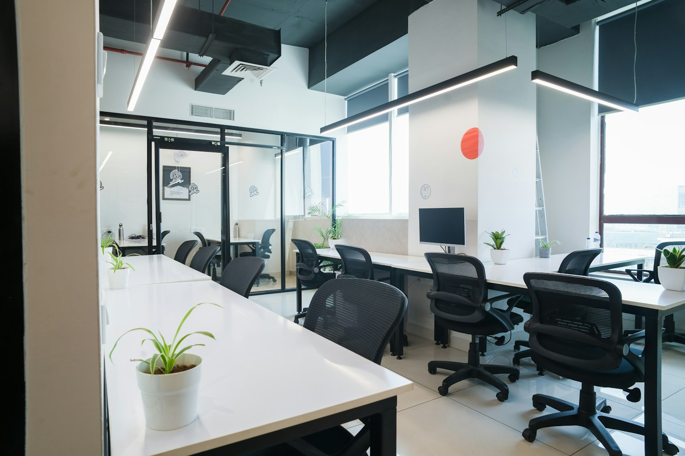
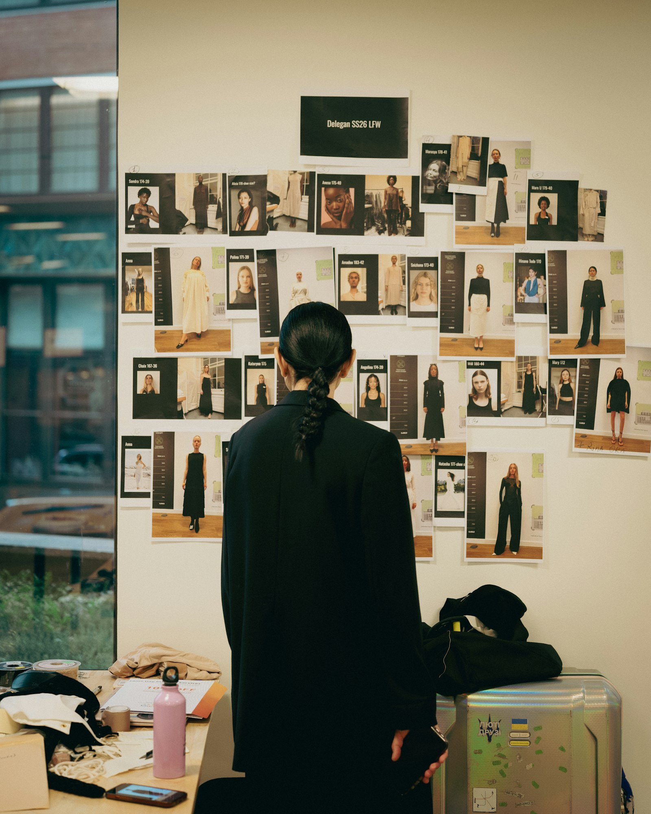

Answers in seconds.
Chat and search that actually knows your business — your docs, your products, your processes.
What we actually do: retrieval over your own data, wired into the tools you already use — self-hosted or cloud.
Websites, web apps and AI tools that win you customers — built by the senior hands you actually talk to, from first sketch to final deploy.
this page, live: 100 · 100 · 100 · 100
Two decades of building software — distilled into a small studio that now ships its own AI products. Senior hands, not a handoff to juniors.
We build with AI because we build AI. The proof isn’t a slide deck — it’s below, in production ↓
We don’t just talk about AI — we ship it. whatever-recall is our own AI product, live in production. We build the same kind of tools for you: your data, your workflows — hours saved every week.
We help you integrate AI into your stack.ship agents that do real work.automate the repetitive tasks away.turn your docs into answers.
Chat and search that actually knows your business — your docs, your products, your processes.
What we actually do: retrieval over your own data, wired into the tools you already use — self-hosted or cloud.
The repetitive tasks your team hates — data entry, tagging, routing, reporting — run themselves.
What we actually do: agent workflows with guardrails, so automation is reliable, not a liability.
Whole products designed around what today’s models can do — prototype fast, then harden.
What we actually do: we start with “what can the model do here?” — AI as the architecture, not a bolted-on feature.
No buzzwords, no magic — tools that save your team hours every week.
The proof: whatever-recall — AI-native project memory, in production.
We don’t sell AI we haven’t built. recall gives every codebase a persistent memory — and we use it on this studio’s own projects, every day.


20+
years of building software for brands & startups
4×100
Lighthouse — performance, a11y, best practice, SEO. This page, live.
1.
product of our own in production — whatever-recall
48h
from your brief to a scoped quote
Automate the busywork your team hates — built by a team that ships its own AI product.
The software your business runs on — fast from day one, no rewrite from MVP to product.
Get found. Look sharp. Load instantly — like the page you’re on right now.
Native feel, both stores, one codebase — including the unglamorous 20% after launch.
Idea to launch with one senior team — same craft at every stage.
A brand you’re proud to send people to — one system from logo to component library.
A short call, a written scope, a fixed quote within 48 hours. You know what you get before you commit.
The people you talk to are the people who build. Weekly deploys you can click, not status decks.
Handover in your repos, 30 days of bug-fixes & questions included — no lock-in, ever.
“Four weeks from first call to launch — and we always talked to the person actually building it.”
S. Weber
Managing Director, retail
“Our old site took eight seconds to load. The new one is instant — and the inquiries followed.”
M. Huber
Owner, manufacturing
“They built an AI assistant on our own documents. The team saves hours every single week.”
J. Brandt
COO, services company
5.0 on Google — read the reviews ↗
Tell us where you want to go in five minutes — we answer with a plan, a timeline and a number. 48h to a scoped quote · no lock-in · Bavaria, Germany.